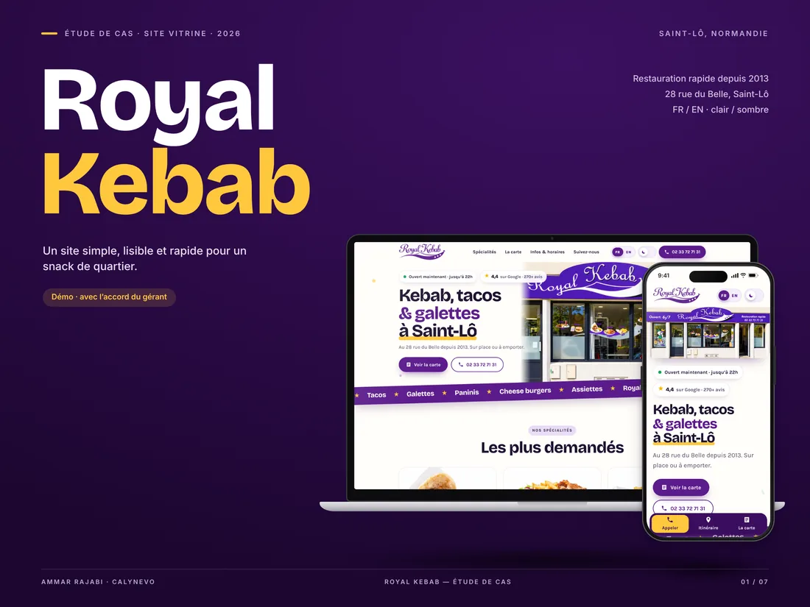
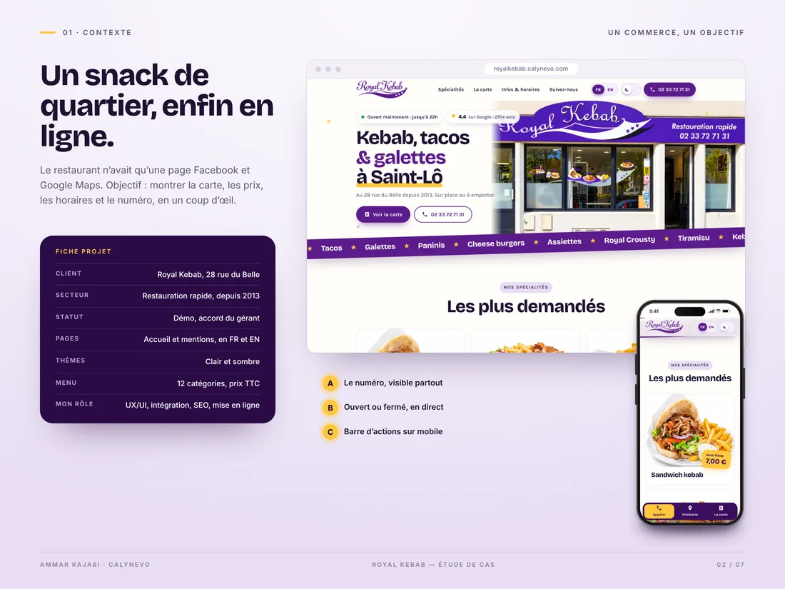
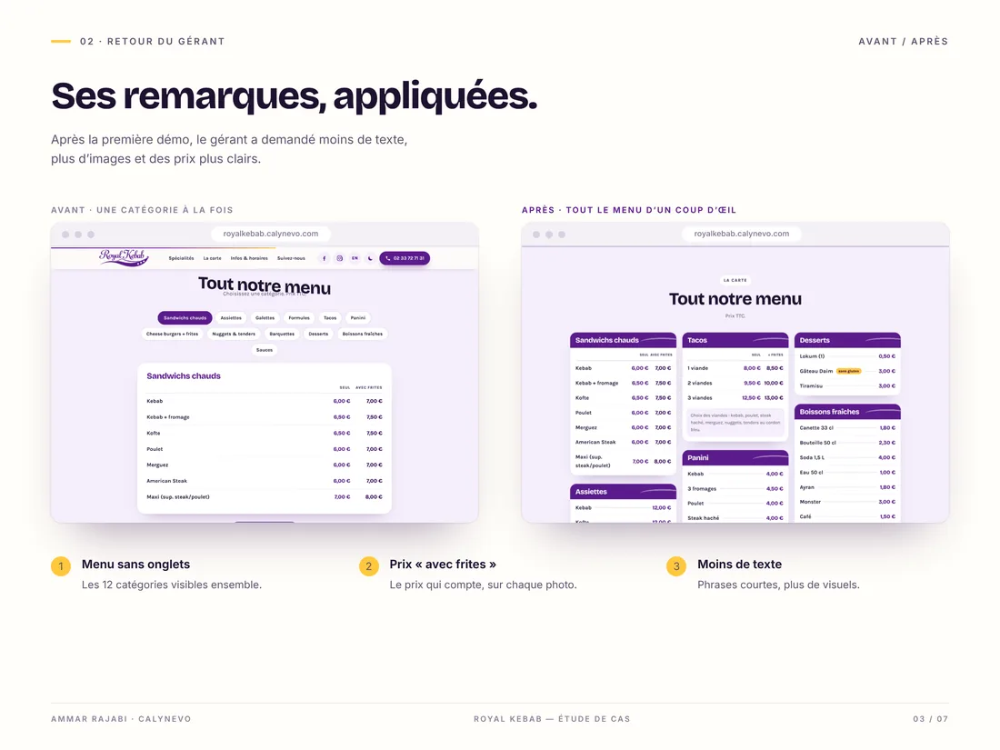
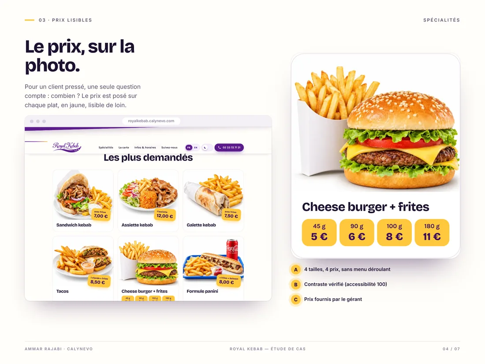
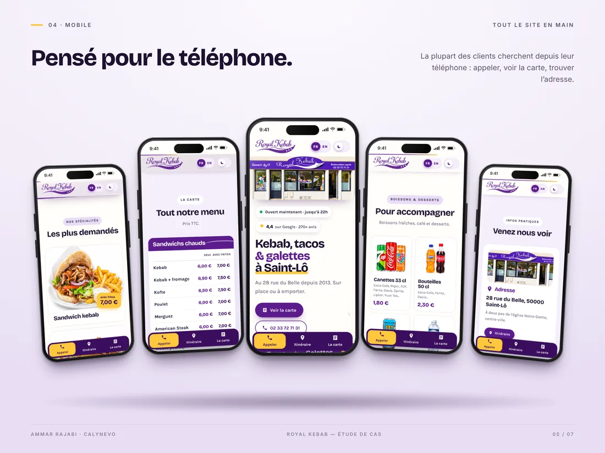
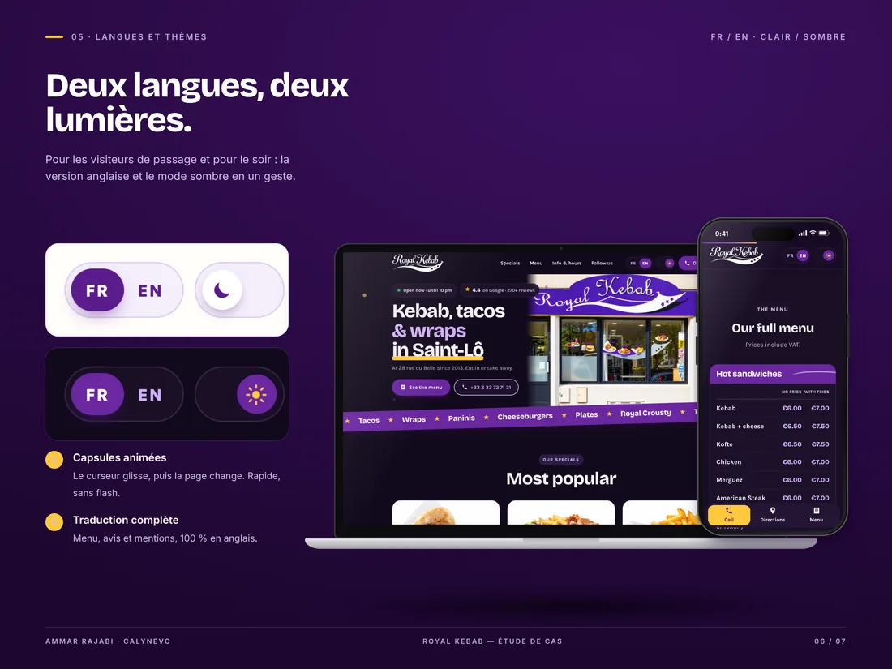
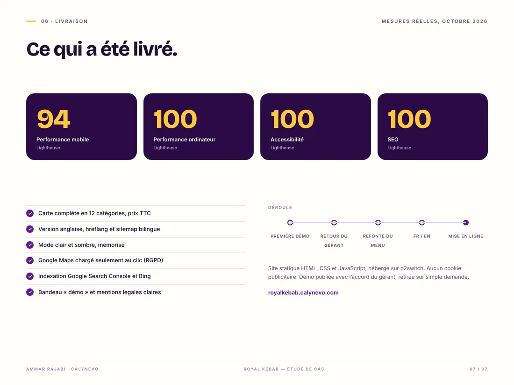
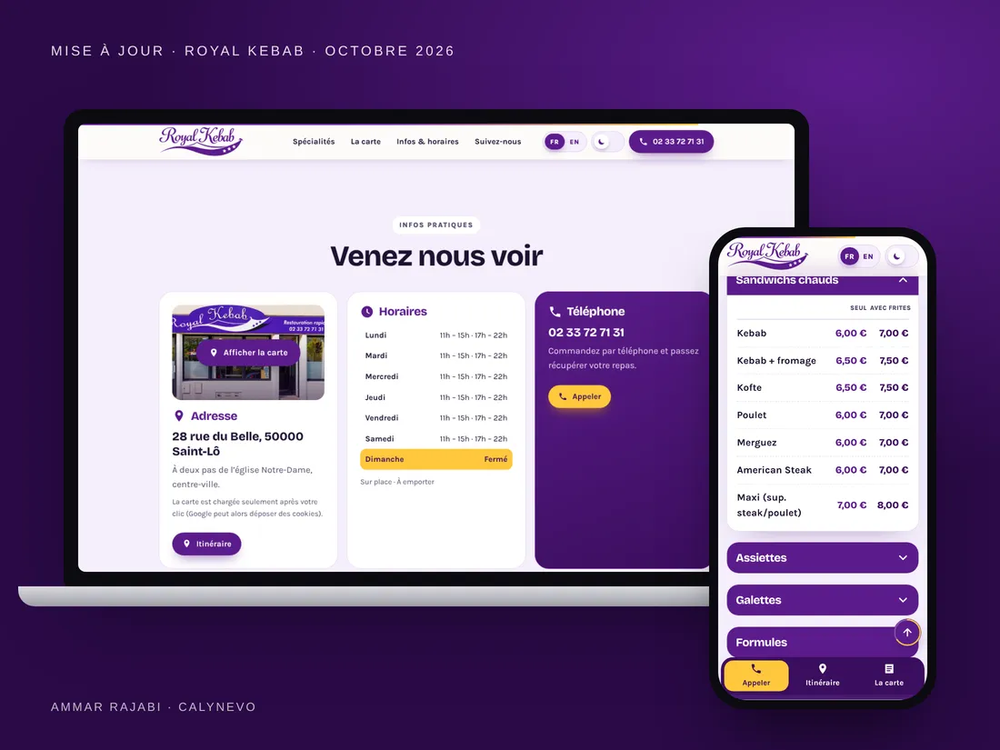

Royal Kebab
Un site vitrine pour un snack du centre de Saint-Lô, ouvert depuis 2013. La carte, les prix, les horaires et le numéro sont visibles en quelques secondes.

En 30 secondes · Démo concept
- Le besoin
Un snack sans site : seulement Facebook et Google Maps.
- Ce que j’ai fait
Carte, prix, horaires et appel en un geste, carte en accordéon sur téléphone.
- Le résultat
Deux versions selon les remarques du gérant. Lighthouse au vert.
En chiffres
- 12catégories de carte
- 2versions selon le gérant
- FR+ENdeux langues
- 1geste pour appeler
Le contexte
Un snack connu sur place mais sans site : seulement une page Facebook et la fiche Google Maps.
Le défi
Montrer en un coup d’œil la carte, les prix et le numéro, pour un client pressé et sur téléphone. Après la première démo, le gérant a demandé moins de texte et des prix plus clairs.
Mon rôle
- Deux versions de l’interface, la seconde selon les remarques du gérant.
- Intégration HTML, CSS et JavaScript, carte en 12 catégories avec prix TTC.
- Version anglaise, mode clair et sombre mémorisé.
- SEO local, Google Search Console, Bing et contrôle qualité Lighthouse.
01 / 06
Partir de ce qui existe
Les photos de la vitrine, les plats et les prix existaient déjà. J’ai surtout mis de l’ordre, sans ajouter de texte inutile.

Contexte Un snack de quartier qui n’avait qu’une page Facebook.
02 / 06
Écouter le gérant
La première démo était trop chargée. Le gérant voulait moins de texte, plus d’images et des prix plus lisibles. La deuxième version suit ces trois remarques.

Les remarques du gérant Moins de texte, plus d’images, des prix plus clairs.
03 / 06
Le prix sur la photo
Pour un snack, la question est « combien ? ». Chaque plat porte son prix en jaune, directement sur la photo.

Le prix sur la photo Chaque plat affiche son prix, lisible de loin.
04 / 06
Pensé pour le téléphone
Une barre fixe en bas de l’écran : appeler, voir la carte, venir. Les horaires du jour sont visibles tout de suite.

Pensé pour le téléphone Appeler, voir la carte et venir, en un geste.
05 / 06
Deux langues, deux lumières
Une version anglaise complète pour les visiteurs de passage, et un mode sombre mémorisé.

Deux langues, deux lumières Version anglaise et mode sombre, mémorisés.
06 / 06
Qualité et mise en ligne
Polices hébergées sur le serveur, Google Maps chargé seulement au clic, sitemap bilingue, Search Console et Bing. Un lien « Site réalisé par CALYNEVO » reste en pied de page.

Livraison Scores Lighthouse réels et liste de ce qui a été livré.
2026
Mise à jour d’octobre
Après un nouvel échange, la carte s’ouvre en accordéon sur téléphone, une catégorie à la fois. Les boissons et les desserts rejoignent la carte avec leurs photos, et Google Maps s’ouvre dans une carte photo de la vitrine, seulement au clic.

Une démo concept, pas une commande
J’ai réalisé ce site sans commande, pour montrer mon savoir-faire au commerce. Il sera retiré sur simple demande.

Contact
Un poste, une mission ou une simple question ?
Je réponds en français ou en anglais, en général sous 48 heures.